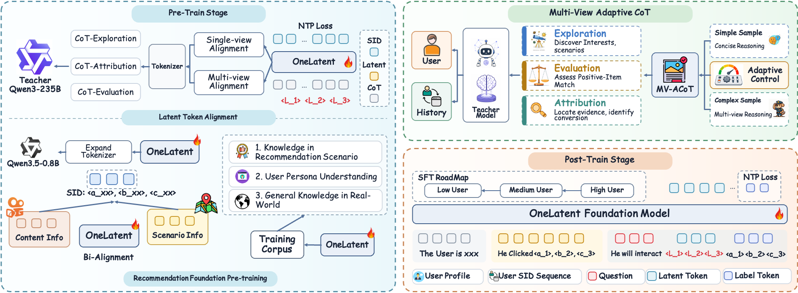
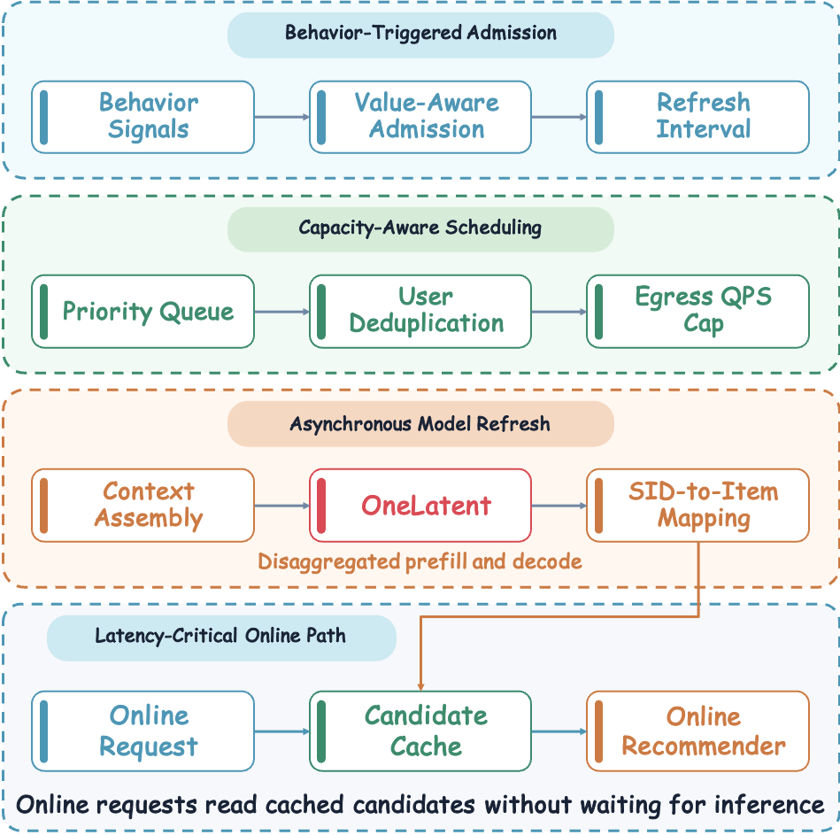

OneLatent: Latent Reasoning for Efficient Foundation Recommendation Models
用大模型做推荐底座时，先生成一段自然语言推理再输出物品的语义 ID（SID），推理文本很长，吞吐随之下降。快手的 OneLatent 在用户上下文和目标 SID 之间插入 3 个可学习的特殊 token。训练时，模型先在这些 token 之后复现教师大模型写的推理文本，再改成直接预测 SID，上线时就不再生成推理文字。它的吞吐是显式推理的 17.49 倍。不过和用同样的教师推理数据训练、直接作答的最强对照相比，它只高 1.58%，说明大部分提升来自教师推理数据。推理位置固定为几个 token，解码时间就不再随推理长度增长。
把大语言模型当作推荐底座时，一种做法是让模型先写一段自然语言推理（CoT），再输出下一个物品的语义编码（SID，把物品映射成三层离散编码的标识）。推理文本比三层 SID 长得多，解码时间和吞吐都被它拖住；而且此前的 OneReason 工作已经报告，同一个模型先推理再作答，并不稳定地好于直接作答。快手这篇 OneLatent 的做法是在用户上下文后面接 3 个固定的特殊 token，训练分几步：先让模型在这 3 个 token 之后复现教师大模型写的推理文本，再改成在它们之后直接输出目标 SID；上线时只接这 3 个 token，不生成任何推理文字。在快手本地生活工业数据上，OneLatent 的 SID@64 是 0.1993，比先写推理再作答的 OneReason-CoT 高 17.44%，推理吞吐是显式推理的 17.49 倍，和不推理的直接预测基本相同。和用同样教师推理数据训练、直接作答的最强对照相比，3 个潜在 token 在工业数据上只多出 1.58%，说明大部分提升来自教师推理数据本身。5% 流量的线上 A/B 测试估算收入提升 9.6%，目前已全量上线。
1. 显式推理为什么在推荐里不好用
推荐底座模型（FRM）的输入是用户画像 、按时间排列的交互历史 和请求时的上下文 （时间、地点、搜索词等），输出是下一个交互物品的 SID。让模型先写推理有两个问题。一是成本：每个请求都要逐个解码整段推理文字。二是准确率不一定涨：推理文字和 SID 之间多了一段生成路径，推理写偏一步，后面的 SID 就跟着偏。论文的 Table 2 里，OneReason-CoT 的先推理模式在工业数据上 SID@64 是 0.1697，低于同一检查点直接作答的 0.1823。
作者的思路是把教师写的推理只当训练信号，推理过程留在模型内部的隐状态里，推理时不输出文字。
2. 方法

2.1 潜在 token 是什么
作者在词表里加了 3 个特殊 token ，所有样本共用这同一组 token ID。Transformer 处理到这 3 个位置时会产生随上下文变化的隐状态，后面的 SID token 通过普通的因果注意力读取这些隐状态。这里没有额外的编码器、投影层或解码器，推理时多出来的计算就是固定的 3 个 token。作者也明确说，后面的 token 仍然能直接看到原始上下文，所以不能保证推理信息全部压在这 3 个位置里。
2.2 教师推理：三个视角，长度随难度调整
教师模型是 Qwen3-235B-A22B-Instruct-2507，从三个视角为每个样本写推理：
- 探索：只给用户画像和历史，让教师推测用户可能的消费意图，输出推理和意图列表。
- 评估：额外告诉教师用户真实交互的物品，让它判断这个物品和用户证据的匹配程度，输出推理和 1–5 分。
- 归因：告诉教师这个物品是正样本，让它解释是哪些历史信号导致了这次交互。
评估和归因视角用到了真实物品，但这个信息只给教师，不进学生模型的输入，所以不会泄露答案。提示词还要求教师先判断证据的复杂程度：信号明确的样本快速收敛，信号冲突的样本做多维比较。这样生成的推理平均长度降到原来的 65%（把不做自适应时的平均长度记为 100），在最长的一成样本上，两种推理的语义相似度约 0.92。
2.3 三阶段对齐和后训练
学生模型从 Qwen3.5-0.8B 初始化，先做推荐领域预训练，让 SID 和物品文字描述能互相生成：
其中 是物品 的三层 SID， 是它的文字描述。之后分三个阶段训练潜在 token：
- 阶段一：输入是“画像、历史、视角标记、3 个潜在 token”，目标是复现一个视角的教师推理。
- 阶段二：同样的输入，目标换成该样本的所有视角推理。每条推理内部按 token 数取平均，避免长推理在损失里占更大比重。
- 阶段三：输入加上请求上下文，目标从推理文本换成下一个物品的 SID。
后训练先按用户活跃度从高到低做课程式微调，然后把“接潜在 token 再预测 SID”和“不接潜在 token 直接预测 SID”两种样本按 1:1 混合训练，保证两种模式都能用。
3. 实验
3.1 主结果
这组实验比较 OneLatent 和三类基线：基于物品 ID 的序列推荐（GRU4Rec、BERT4Rec、HSTU），基于 SID 的生成式推荐（TIGER、OneRec），以及基于 OneReason 的推理增强模型。数据有两份：快手本地生活 7 天的工业日志（测试集 20,393 条），以及快手公开的 LLM-Rec 基准（测试集 10,000 条）。指标 Hit@64 表示正确物品是否出现在模型生成的前 64 个结果里。下表摘自论文 Table 2，NoThink 和 Think 是同一个检查点的直接作答和先推理模式，括号里是训练所用的推理数据：
| 方法 | 公开 SID@64 | 公开 ID@64 | 工业 SID@64 | 工业 ID@64 |
|---|---|---|---|---|
| TIGER | 0.0078 | 0.0156 | 0.1432 | 0.0859 |
| OneRec | 0.0082 | 0.0177 | 0.1468 | 0.0900 |
| OneReason | 0.0081 | 0.0272 | 0.1658 | 0.4941 |
| OneReason-CoT NoThink（原 CoT） | 0.0104 | 0.0334 | 0.1823 | 0.4936 |
| OneReason-CoT NoThink（评估视角） | 0.0213 | 0.0623 | 0.1962 | 0.5065 |
| OneReason-CoT Think（原 CoT） | 0.0089 | 0.0305 | 0.1697 | 0.4759 |
| OneReason-CoT Think（三视角合并） | 0.0091 | 0.0303 | 0.1505 | 0.4567 |
| OneLatent（三视角合并） | 0.0239 | 0.0742 | 0.1993 | 0.5088 |
OneLatent 在所有指标上都是最高。但看提升来源要分开看两组对比。和 Think 模式比，工业 SID@64 高 17.44%；而且同样用三视角数据训练，Think 模式只有 0.1505，OneLatent 是 0.1993，说明同一份推理数据，让模型逐字写出来再作答反而降低准确率，因为 SID 要等推理写完才生成，推理里的偏差会传给 SID。和每一列最强的非 OneLatent 结果比，工业 SID@64 只高 1.58%，ID@64 只高 0.45%；公开数据上分别高 12.21% 和 19.10%。工业数据上的最强对照是用评估视角推理训练、直接作答的模型，它已经拿到了大部分收益。
在 9B 主干上，OneLatent 的 SID@64 是 0.2008，比同尺寸最好的非潜在推理结果 0.1857 高 8.13%（论文 Table 3）。
3.2 推理效率
这组实验检验潜在 token 的推理开销。作者在 872 条测试样本上比较三种推理方式（论文 Table 7）：
| 方法 | 总耗时（秒） | QPS |
|---|---|---|
| 直接预测（不推理） | 3.17 | 274.56 |
| 显式推理 | 55.59 | 15.68 |
| OneLatent | 3.17 | 274.29 |
OneLatent 的吞吐是显式推理的 17.49 倍，和直接预测几乎相同，因为每个请求只多处理 3 个固定 token，不需要逐个解码推理文字。论文结论部分写的是“10 倍以上”，和正文的 17.49 倍不一致，以表中数字为准。
3.3 教师推理的质量和作用
这组实验检验三视角推理是否比原有推理更好。作者请 GPT-5.5 从事实性、证据使用、因果逻辑等九个维度，给每种推理各 100 条样本打 1–5 分。三个新视角都在 4 分以上，评估视角最高（4.33），而 OneReason 的原推理只有 3.14，说明新推理的质量确实更高（论文 Table 4）。质量高也带来了推荐效果：用不同推理数据训练 OneLatent，公开数据上的 SID@64 从原推理的 0.0092 升到三视角合并后的 0.0239，只用评估视角就已经有 0.0233，所以收益大部分来自评估视角（论文 Table 5）。
潜在 token 的数量从 1 加到 3 时，三层 SID 的命中率都在上升，加到 4 或 5 个不再稳定提升，所以最终用 3 个。
为了看潜在 token 里存了什么，作者把画像、视角标记和 3 个潜在 token 输入训练好的模型，故意去掉交互历史，让它生成推理文字，再和教师推理比较语义相似度，三个视角的余弦相似度在 0.79 到 0.80 之间（论文 Table 8）。作者自己说明，画像仍然可见，这个相似度只能说明有关联，不能证明推理信息都存在潜在 token 里。
3.4 上线方式和 A/B 测试

即便没有推理文字，对每个请求同步调用底座模型仍然超出延迟和吞吐预算。所以 OneLatent 作为一路独立召回部署：用户有新行为时触发异步推理，按用户价值和行为强度决定刷新优先级，生成的候选写入 Redis，在线请求从缓存取候选，和原有召回结果一起进入精排竞争。A/B 测试在快手本地生活广告的一个子场景进行，实验组和对照组各占 5% 流量，时间是 2026 年 9 月 3 日到 10 日。实验组曝光量提升 2.566%，广告消耗提升 5.157%，后验估计收入提升 9.6%。
4. 局限
论文没有单独的局限章节，作者在正文里承认两点：潜在 token 不是严格的信息瓶颈，推理信息可能分散在整个模型里；Table 6 的提升来自完整的训练流程，不能单独归因于潜在 token。
另外两点需要注意。第一，工业数据上 OneLatent 比用同样教师数据训练的直接作答模型只高 1.58%，论文没有报告多次运行的方差，这个差距是否稳定无法判断。第二，线上采用异步缓存，候选是在用户上次行为之后生成的，A/B 的收益里有多少来自潜在推理、有多少来自新增一路召回，论文没有拆开。
5. 实践意义
一是想给推荐模型加推理能力，可以先把教师推理当作训练数据用，而不是要求模型在线上生成推理。论文里同一份三视角推理数据，用作训练信号时工业 SID@64 达到 0.1993，要求模型先写出来再作答只有 0.1505。
二是评估“潜在推理”类方法时，要把用同样教师数据训练的直接作答模型作为对照。本文工业数据上大部分提升在这个对照里已经出现，只和显式推理对比会高估潜在 token 本身的作用。